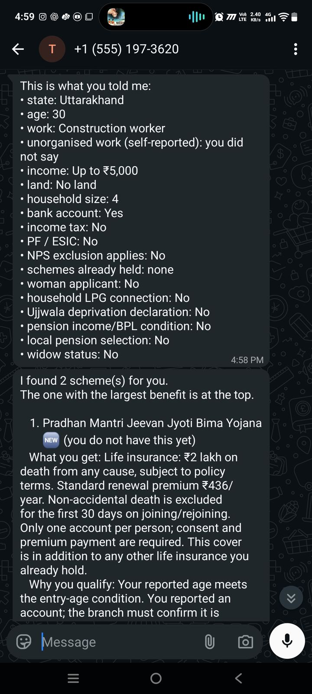
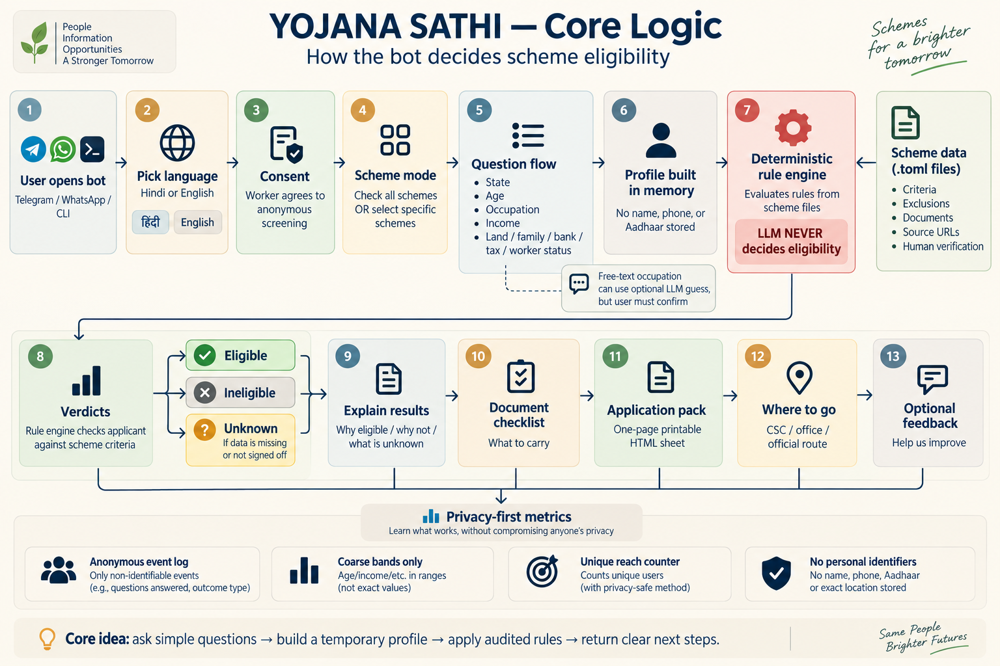
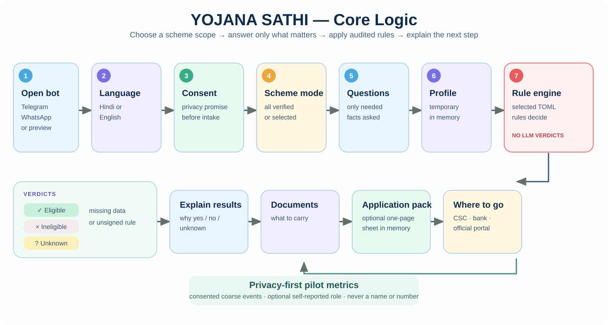
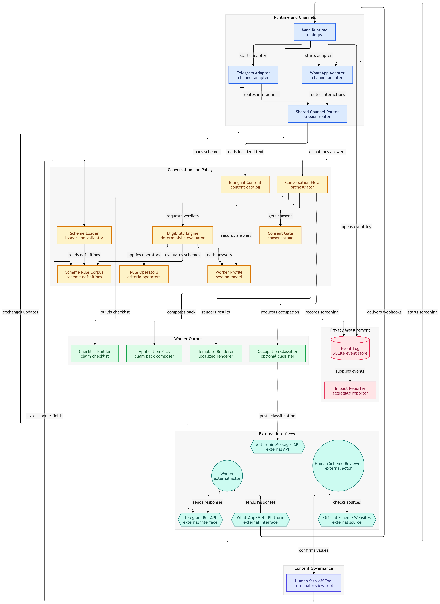

No field impact yet
No worker has used this outside maintainer testing. No claim about applications filed, benefits received, or people reached.
Code for a Billion 2026 · Livelihood
A Hindi and English chat that tells an unorganised worker which schemes fit, what to carry, and where to go — before a day's wage is spent at the wrong counter.

Schemes are published. What a worker can't tell from outside is whether one will actually accept them.
Registration is not receipt of a benefit. None of these figures measures this project.
Each screening picks its schemes first, then runs the same cited rules on only the answers it needs.
Every signed scheme, or just the ones you care about.
Only the questions those schemes need. “Don't know” is always allowed.
Plain rule files with cited sources. Same answers, same verdict — no model decides.
What you get, what it costs, what to carry, and where to go.


Most screeners have two outcomes and quietly default the third. If a question wasn't answered, or a rule hasn't been checked by a person, this one says so — and names what's missing.
Screenshots from the running bot.




The handoff
The language model sits outside the decision path. It may suggest an occupation for the worker to confirm — nothing else.



A reviewed set of answers that hold up beats a broad directory of approximate ones.
₹36,000 per year from age 60
Common Service Centre
₹18,000 per year
State portal
₹2,00,000 life cover
Bank branch
₹2,00,000 accident cover
Bank branch
In-kind LPG support
Online or an LPG distributor
Gateway — no payout of its own
e-Shram portal or a CSC
₹2,400 per year central share; ₹6,000 from age 80
Common Service Centre
₹3,600 per year central share; ₹6,000 from age 80
Common Service Centre
₹3,600 per year central share; ₹6,000 from age 80
Common Service Centre
₹36,000 per year from age 60
Common Service Centre
National pension figures are the stated central share; state pensions can be higher, and overlapping pension routes are never added together. The Uttarakhand widow pension is not served until the department confirms its rate.
Read from the bot's own event log, cached for a minute. Conversations and sheets — not people helped.
Updated — · still maintainer testing, not a field pilot
Naming what hasn't been shown yet is part of the product, not a footnote.
No worker has used this outside maintainer testing. No claim about applications filed, benefits received, or people reached.
Every rupee figure is what a scheme states it pays — not money anyone has been shown to have received through this tool.
An independent open-source project. Where a rule here conflicts with a department, the department is right.
The Uttarakhand widow-pension amount comes from myScheme because the department page does not state it.
Both flows are tested by the maintainer. Comprehension has not been checked with non-technical workers.
Telegram and the browser version are live. WhatsApp runs on Meta's test tier until business verification completes.
Built by Avinash Negi
“Not one threshold, rupee figure or age band in this project was authored by a model.”— from the blog post
I designed Yojana Sathi, checked and signed off every scheme it serves, and deployed and run it myself. An AI coding assistant wrote much of the code and the first drafts of the scheme files under my review; no rule reaches a worker until I have signed it.
Spotted a wrong threshold, a stale amount, or a scheme worth adding? Corrections are the most useful thing anyone can send.